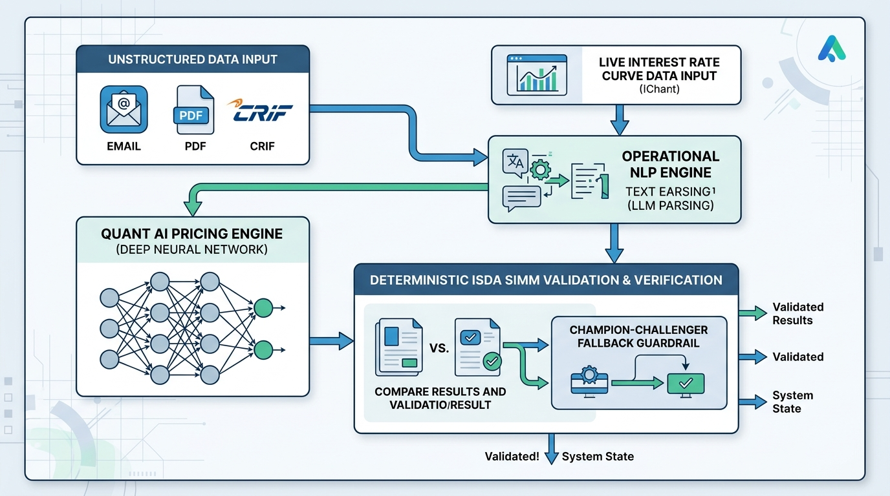
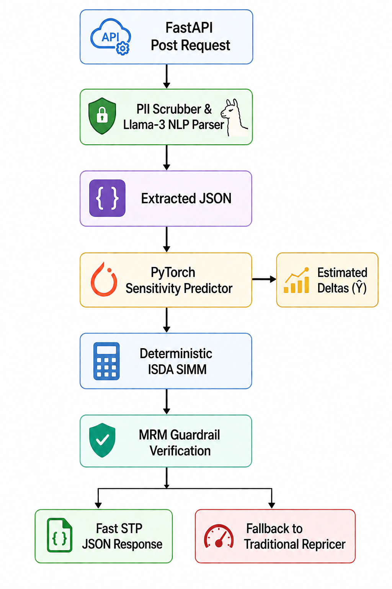
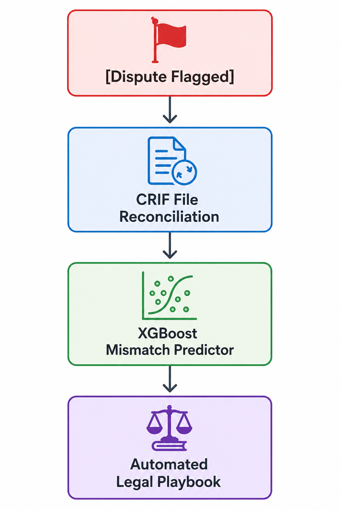

AI-Based Initial Margin Service
Overview & Business Case
Initial Margin (IM) requirements have surged since the implementation of Uncleared Margin Rules (UMR), which mandate bilateral collateral exchange for non-centrally cleared derivatives. The industry-standard framework to compute these requirements is the ISDA Standard Initial Margin Model (SIMM). However, calculating ISDA SIMM introduces massive computational and operational bottlenecks.
The Core Challenge in ISDA SIMM
Under the ISDA SIMM methodology, the initial margin is computed based on granular risk sensitivities (Greeks such as Delta, Vega, and Curvature) mapped across multiple tenors and risk factors (Interest Rates, FX, Credit, Equity, and Commodities). For massive, exotic portfolios, traditional pricing engines must execute a "bump and revalue" simulation for every market factor. This demands millions of Monte Carlo runs, causing high cloud infrastructure bills, processing latency, and delayed intraday pre-trade checking.
Four Primary AI Use Cases
- Algorithmic Differentiation (AAD) via Graph AI: Simultaneously evaluates thousands of underlying trade sensitivities, condensing hours-long batch runs into sub-second operations.
- Machine Learning (ML) Emulators: Replaces heavy Monte Carlo simulations for Margin Valuation Adjustments (MVA) with deep learning networks that approximate sensitivities instantly.
- Margin Call Automation: Employs Natural Language Processing (NLP) to parse, extract, and match incoming margin calls and collateral details from unstructured emails and PDFs.
- Portfolio Optimization & Hedging: Runs fast heuristic models to identify optimal netting or compaction trades, reducing overall SIMM capital requirements.
Business Drivers
- Intraday Pre-Trade Checking: Trade execution demands real-time feedback. Instead of waiting 30 minutes for a traditional pricing loop, traders use neural emulators to get margin impact feedback in milliseconds.
- Infrastructure Cost Reduction: Replacing large compute clusters with neural networks doing matrix multiplications significantly reduces cloud costs.
- The Dual-Engine Compliance Model: Firms deploy a fast AI engine as a intraday "Challenger" for immediate feedback, and run the traditional regulator-approved "Champion" quant engine overnight for the final margin of record. This yields maximum speed without risking compliance.
Complexity Summary: Traditional bump-and-reprice calculations operate at \(O(M \times N)\) complexity (where \(M\) is the number of trades and \(N\) is the number of curve tenors/factors). In contrast, the AI sensitivity model evaluates in \(O(L)\) complexity (where \(L\) is the fixed number of neural network layers), converting a 30-minute simulation into a 2-millisecond calculation.
System Architecture
To deliver both real-time operational processing and regulatory compliance, the platform utilizes a dual-engine architecture where AI operates in parallel with deterministic validation.

The system consists of the following key pipelines:
- Quant AI Pricing Engine: A PyTorch Deep Neural Network (DNN) curve sensitivity emulator that predicts Delta sensitivities from interest rate curve states in microseconds.
- Operational NLP Engine: A secure parsing engine using NVIDIA NIM (Llama-3.3-70b-instruct) to extract structured margin requests from unstructured notifications, wrapped in a regex-based PII scrubber.
- Deterministic SIMM Engine & MRM Guardrails: Aggregates predicted sensitivities using fixed ISDA correlation matrices, and validates the output against exact benchmarks under a Model Risk Management (MRM) framework.
Unified API Workflow

The Quant AI Engine
The core of the numerical speedup is mapping input yield curves to portfolio sensitivities, formulated as a non-linear regression problem. We define a deep neural network \(f(X; \Theta) = \hat{Y}\), where:
- \(X\) is the vector of input market curve rates (e.g., par swap rates for tenors from 1M to 30Y).
- \(\Theta\) represents the weights and biases of the network.
- \(\hat{Y}\) is the estimated Greek sensitivity vector (Deltas) for each SIMM tenor bucket.
Mathematical Formulation & Activation Functions
Unlike standard neural networks that use ReLU, our sensitivity emulator prefers Swish or Softplus activations. Continuous and differentiable properties are essential because sudden discontinuities (like ReLU's zero-boundary) introduce artificial noise in Greek surfaces, causing erratic hedging. A simple three-layer network is expressed as:
$$\hat{Y} = \sigma(W_2 \cdot \sigma(W_1 \cdot X + b_1) + b_2)$$To train the network, offline simulations generate exact sensitivities using the pricing grid. We minimize a Mean Squared Error (MSE) loss function augmented with a gradient-regularization term to enforce smoothness across tenors:
$$\text{Loss} = \frac{1}{N}\sum_{i=1}^{N}||Y_i - \hat{Y}_i||^2 + \lambda||\nabla_X \hat{Y}_i||^2$$Here, \(\lambda||\nabla_X \hat{Y}_i||^2\) acts as a smoothness constraint, preventing erratic oscillations in the predicted Greeks.
PyTorch Implementation
Below is the PyTorch model definition, mock dataset generator, and training loop structure utilized in the service:
import torch
import torch.nn as nn
import numpy as np
from torch.utils.data import Dataset, DataLoader
NUM_TENORS = 8
SEED = 42
# 1. Four-hidden-layer DNN with Softplus activations
class SIMMSensitivityPredictor(nn.Module):
"""Maps yield-curve rates to delta sensitivities.
Architecture:
Linear(8, 64) → Softplus → Linear(64, 64) → Softplus →
Linear(64, 32) → Softplus → Linear(32, 8)
"""
def __init__(self, input_dim=NUM_TENORS, output_dim=NUM_TENORS):
super().__init__()
self.net = nn.Sequential(
nn.Linear(input_dim, 64),
nn.Softplus(),
nn.Linear(64, 64),
nn.Softplus(),
nn.Linear(64, 32),
nn.Softplus(),
nn.Linear(32, output_dim),
)
def forward(self, x):
result = self.net(x)
return torch.as_tensor(result)
# 2. Synthetic Dataset Generator (uniform distribution)
class SIMMDataset(Dataset):
def __init__(self, num_samples=10000):
rng = np.random.default_rng(SEED)
self.X = torch.tensor(
rng.uniform(-0.02, 0.10, (num_samples, NUM_TENORS)),
dtype=torch.float32,
)
self.Y = torch.zeros((num_samples, NUM_TENORS), dtype=torch.float32)
for i in range(num_samples):
curve = self.X[i].numpy()
steepness = curve[-1] - curve[0]
self.Y[i] = torch.tensor([
curve[0] * 1000, curve[1] * 1200, curve[2] * 1500,
steepness * 5000, steepness * 8000,
curve[5] ** 2 * 50000, curve[6] ** 2 * 80000,
(curve[7] - 0.01) * 3000,
], dtype=torch.float32)
def __len__(self):
return len(self.X)
def __getitem__(self, idx):
return self.X[idx], self.Y[idx]
def get_dataloaders(batch_size=64):
dataset = SIMMDataset(10000)
train_size = int(0.8 * len(dataset))
test_size = len(dataset) - train_size
train_ds, test_ds = torch.utils.data.random_split(
dataset, [train_size, test_size],
generator=torch.Generator().manual_seed(SEED),
)
return (
DataLoader(train_ds, batch_size=batch_size, shuffle=True),
DataLoader(test_ds, batch_size=batch_size, shuffle=False),
)
# 3. Training loop with checkpoint persistence
def train_emulator():
torch.manual_seed(SEED)
train_loader, test_loader = get_dataloaders()
model = SIMMSensitivityPredictor()
criterion = nn.MSELoss()
optimizer = torch.optim.Adam(model.parameters(), lr=0.001)
for epoch in range(15):
model.train()
running_loss = 0.0
for inputs, targets in train_loader:
loss = criterion(model(inputs), targets)
optimizer.zero_grad()
loss.backward()
optimizer.step()
running_loss += loss.item() * inputs.size(0)
model.eval()
val_loss = 0.0
with torch.no_grad():
for inputs, targets in test_loader:
val_loss += criterion(model(inputs), targets).item() * inputs.size(0)
print(f"Epoch {epoch+1:02d} | Train MSE: {running_loss/train_size:.6f}"
f" | Val MSE: {val_loss/test_size:.6f}")
torch.save({
"model_state_dict": model.state_dict(),
"optimizer_state_dict": optimizer.state_dict(),
"epoch": 15,
"model_version": "1.0",
}, "models/simm_predictor.pt")
ISDA SIMM Mathematics
Once the Quant AI model outputs the predicted Delta sensitivities (\(\hat{Y}\)), they are aggregated using the deterministic SIMM mathematics. A key regulatory point is that correlations are not calibrated by individual firms; they are dictated annually by the ISDA Governance Committee following industry crowdsourced calibration exercises.
Interest Rate Risk Class
For the Interest Rate risk class, predicted sensitivities are scaled by risk weights and aggregated using the prescribed ISDA correlation matrix (\(R\)):
$$WS_i = \hat{\Delta}_i \times \text{Risk Weight}_i$$ $$WS = \sum_i WS_i$$ $$\text{IR Initial Margin} = \sqrt{\sum_i \sum_j WS_i \cdot \rho_{ij} \cdot WS_j}$$Where \(\rho_{ij}\) is the fixed correlation parameter between tenor \(i\) and tenor \(j\) dictated by the ISDA SIMM guidelines.
Multi-Asset Correlation Structures
- Equity Risk Class: Employs a two-tiered correlation model. Intra-bucket correlation (\(\rho_{kl}\)) governs equities in the same category (e.g., tech stocks, pegged around 0.15–0.25). Inter-bucket correlation (\(\gamma_{bc}\)) dictates relations between different sectors (e.g., energy vs. finance, pegged around 0.00–0.15). $$IM_{\text{Equity}} = \sqrt{\sum_b K_b^2 + \sum_b \sum_{c \ne b} \gamma_{bc} S_b S_c}$$
- FX Risk Class: Categorized by liquidity divisions (significantly liquid, less liquid, emerging). Correlations (\(\rho_{kl}\)) between distinct FX risk factors are hardcoded to a uniform **0.50** unless specific Pegged Currency relationships apply.
SIMM Aggregation Code
This implementation calculates the margin requirement using NumPy matrix multiplications:
import numpy as np
NUM_TENORS = 8
def isda_correlation_ir(n_tenors: int = NUM_TENORS) -> np.ndarray:
"""Build IR correlation matrix: rho_ij = 0.7^|i-j|."""
rho = np.zeros((n_tenors, n_tenors))
for i in range(n_tenors):
for j in range(n_tenors):
rho[i, j] = 0.7 ** abs(i - j)
return rho
def calculate_weighted_sensitivities(sensitivities: np.ndarray) -> np.ndarray:
"""Apply risk weights (placeholder: weight=1.0 for all tenors)."""
return sensitivities.copy()
def calculate_portfolio_margin(
weighted_sensitivities: np.ndarray,
rho: np.ndarray,
) -> float:
"""Compute aggregate SIMM IM = sqrt(WS^T * rho * WS)."""
ws = weighted_sensitivities
return float(np.sqrt(ws @ rho @ ws))
def calculate_isda_im(sensitivities: np.ndarray) -> float:
"""Convenience: full pipeline from raw sensitivities to SIMM IM."""
ws = calculate_weighted_sensitivities(sensitivities)
rho = isda_correlation_ir(len(sensitivities))
return calculate_portfolio_margin(ws, rho)
Operational NLP Engine
Processing margin calls manually is highly error-prone. Modern operations rely on NLP engines to extract fields from inbound shared inbox emails and PDFs, automatically matching them with ledger records.
Named Entity Recognition (NER) & Scrubbing
Before passing text to the Large Language Model (LLM), a deterministic regex pipeline scrubs personally identifiable information (PII) like phone numbers and email addresses to preserve privacy. Then, a fine-tuned LLM parses unstructured text into structured data structures:
| Unstructured Email Snippet | Extracted Entity | Structured JSON Data Label |
|---|---|---|
| "Regarding agreement #USD-992A..." | Legal Agreement ID | agreement_id: "USD-992A" |
| "...we demand an initial margin of $4.2M..." | Margin Call Amount | call_amount: 4200000.00 |
| "...to be satisfied via US Treasuries." | Collateral Type | collateral_preference: "UST" |
LLM Selection via NVIDIA NIM & Constrained Extraction
For high-speed, API-based financial extraction, the service calls the NVIDIA NIM endpoint hosting meta/llama-3.3-70b-instruct. A deterministic PII-scrubbing pipeline runs first, then the scrubbed text is sent to the NIM chat-completion API. The response is validated against a Pydantic v2 schema, and failures are retried with exponential backoff (3 attempts, 1s/2s/4s delays).
PII Scrubber
import re
_EMAIL_RE = re.compile(r"\b[A-Za-z0-9._%+-]+@[A-Za-z0-9.-]+\.[A-Za-z]{2,}\b")
_PHONE_RE = re.compile(
r"\b(?:\+?\d{1,3}[-.\s]?)?\(?\d{2,4}\)?[-.\s]?\d{3,4}[-.\s]?\d{3,4}\b"
)
def scrub_pii(text: str) -> str:
"""Redact email addresses and phone numbers."""
result = _EMAIL_RE.sub("[EMAIL REDACTED]", text)
result = _PHONE_RE.sub("[PHONE REDACTED]", result)
return result
NIM Extraction via HTTP
import json
import httpx
from pydantic import BaseModel
class MarginCallSchema(BaseModel):
agreement_id: str | None = None
net_margin_call_demand: float | None = None
currency: str | None = None
confidence: float | None = None
NIM_BASE_URL = "https://integrate.api.nvidia.com/v1"
_SYSTEM_PROMPT = (
"You are a financial data extraction assistant. Given a margin call email, "
"output ONLY valid JSON matching this schema: "
'{"agreement_id": str|null, "net_margin_call_demand": float|null, '
'"currency": str|null, "confidence": float|null} '
"Rules: JSON only, no markdown, ISO 4217 currencies, null for missing values."
)
def extract_margin_data(text: str, api_key: str,
model: str = "meta/llama-3.3-70b-instruct",
temperature: float = 0.0,
timeout: float = 30.0) -> MarginCallSchema:
"""Extract structured margin-call data via NVIDIA NIM."""
response = httpx.post(
f"{NIM_BASE_URL}/chat/completions",
headers={"Authorization": f"Bearer {api_key}"},
json={
"model": model,
"messages": [
{"role": "system", "content": _SYSTEM_PROMPT},
{"role": "user", "content": text},
],
"temperature": temperature,
},
timeout=timeout,
)
content = response.json()["choices"][0]["message"]["content"]
return MarginCallSchema(**json.loads(content))
Model Risk Management (MRM) & Compliance
Under regulatory frameworks such as **SR 11-7** (Federal Reserve Guidance on Model Risk Management), a neural network cannot be used as the final model of record. Because deep learning is a "black box" prone to out-of-distribution (OOD) failures under extreme market regimes, strict validation guardrails must encapsulate the system.
Champion-Challenger Workflow
We implement a **Champion-Challenger** architecture. The Quant AI engine is the Challenger, executing intraday pricing, "what-if" pre-trade simulations, and wire matching. The traditional exact pricing grid acts as the Champion, running overnight. If the Challenger deviates from the exact calculations beyond a preset tolerance band, the system triggers a fallback routing flag.
| Component | AI Engine Role (Challenger) | ISDA & Regulators Role (Champion) |
|---|---|---|
| Sensitivities (X -> Ŷ) | Predicted instantly in milliseconds via PyTorch DNN. | Validated daily via full overnight "bump and revalue" grid. Complies with SR 11-7. |
| Correlations (R) | Ignored by the neural network weights. | Dictated and calibrated annually by ISDA via crowdsourced data. Hardcoded parameters. |
Dynamic Fallback Logic & Decision Engine
The guardrail system classifies every request into one of five outcomes using a Decision enum. The pipeline tracks three independent health flags — extraction success, margin tolerance, and validation status — and routes accordingly:
from enum import Enum
class Decision(str, Enum):
ACCEPT = "ACCEPT"
FALLBACK_MARGIN = "FALLBACK_MARGIN"
FALLBACK_EXTRACTION = "FALLBACK_EXTRACTION"
FALLBACK_VALIDATION = "FALLBACK_VALIDATION"
FALLBACK_TIMEOUT = "FALLBACK_TIMEOUT"
def check_margin_tolerance(
ai_margin: float,
benchmark_margin: float,
tolerance: float = 0.015,
) -> bool:
"""Return True if |ai - benchmark| / benchmark <= tolerance."""
if benchmark_margin == 0.0:
return ai_margin == 0.0
return abs(ai_margin - benchmark_margin) / benchmark_margin <= tolerance
def determine_decision(
extraction_ok: bool,
margin_ok: bool,
validation_ok: bool,
) -> Decision:
if not extraction_ok:
return Decision.FALLBACK_EXTRACTION
if not validation_ok:
return Decision.FALLBACK_VALIDATION
if not margin_ok:
return Decision.FALLBACK_MARGIN
return Decision.ACCEPT
FastAPI Prototype Implementation
Unifying the components into a cohesive, high-performance API endpoint, the service is built using FastAPI. The environment relies on torch, transformers, fastapi, numpy, and pydantic.
Service Orchestration & API Endpoint
The pipeline is orchestrated by MarginCalculationService, which coordinates PII scrubbing, NIM extraction, DNN inference, SIMM aggregation, and guardrail decisions. The FastAPI route delegates all business logic to this service via dependency injection.
Schemas (Pydantic v2)
from pydantic import BaseModel, field_validator
NUM_TENORS = 8
class MarginQueryRequest(BaseModel):
unstructured_text: str
live_curve_rates: list[float]
exact_engine_benchmark: float
@field_validator("live_curve_rates")
@classmethod
def _validate_curve_length(cls, v):
if len(v) != NUM_TENORS:
raise ValueError(f"Must contain exactly {NUM_TENORS} values")
return v
class MarginQueryResponse(BaseModel):
status: str
agreement_id: str | None = None
ai_margin: float | None = None
benchmark_margin: float
deviation_pct: float | None = None
currency: str | None = None
reason: str | None = None
MarginCalculationService
import torch
from src.nlp.scrubber import scrub_pii
from src.nlp.extractor import extract_margin_data
from src.quant.model import SIMMSensitivityPredictor
from src.quant.train import load_checkpoint
from src.simm.math import calculate_isda_im
from src.guardrails.fallback import Decision, check_margin_tolerance, determine_decision
class MarginCalculationService:
def __init__(self, settings):
self._settings = settings
self._model = None
def _load_model(self):
if self._model is None:
model = SIMMSensitivityPredictor()
try:
load_checkpoint(self._settings.model_checkpoint, model)
except FileNotFoundError:
pass # use untrained model for demo
model.eval()
self._model = model
return self._model
def run_pipeline(self, unstructured_text, live_curve_rates,
exact_engine_benchmark):
# 1. Scrub PII
scrubbed = scrub_pii(unstructured_text)
# 2. Extract via NVIDIA NIM
extraction = None
extraction_ok = True
try:
extraction = extract_margin_data(
scrubbed, api_key=self._settings.nvidia_api_key,
model=self._settings.nim_model,
)
except RuntimeError:
extraction_ok = False
# 3. DNN inference
model = self._load_model()
tensor = torch.tensor(live_curve_rates, dtype=torch.float32).unsqueeze(0)
with torch.no_grad():
predicted_deltas = model(tensor).squeeze(0).numpy()
# 4. SIMM aggregation
ai_margin = calculate_isda_im(predicted_deltas)
# 5. Guardrail decision
margin_ok = check_margin_tolerance(
ai_margin, exact_engine_benchmark, self._settings.margin_tolerance,
)
decision = determine_decision(
extraction_ok=extraction_ok, margin_ok=margin_ok, validation_ok=True,
)
deviation = None
if exact_engine_benchmark != 0.0:
deviation = (ai_margin - exact_engine_benchmark) / exact_engine_benchmark * 100
return MarginQueryResponse(
status=decision.value,
agreement_id=extraction.agreement_id if extraction else None,
ai_margin=float(ai_margin),
benchmark_margin=float(exact_engine_benchmark),
deviation_pct=deviation,
currency=extraction.currency if extraction else None,
)
FastAPI Route
from http import HTTPStatus
from fastapi import FastAPI, HTTPException
app = FastAPI(title="AI-Based Margin Service", version="0.1.0")
@app.post("/v1/calculate-margin", response_model=MarginQueryResponse)
def calculate_margin(body: MarginQueryRequest) -> MarginQueryResponse:
service = get_margin_service(body) # dependency injection
try:
return service.run_pipeline(
unstructured_text=body.unstructured_text,
live_curve_rates=body.live_curve_rates,
exact_engine_benchmark=body.exact_engine_benchmark,
)
except Exception as exc:
raise HTTPException(
status_code=HTTPStatus.INTERNAL_SERVER_ERROR, detail=str(exc),
)
Validation Metrics & Acceptance Criteria
Model quality is measured with four regression metrics computed over the held-out test set. The acceptance criteria require RMSE < 0.05 and R² > 0.95 before the checkpoint is promoted.
import numpy as np
def calculate_rmse(actual: np.ndarray, predicted: np.ndarray) -> float:
"""Root mean squared error."""
return float(np.sqrt(np.mean((actual - predicted) ** 2)))
def calculate_mae(actual: np.ndarray, predicted: np.ndarray) -> float:
"""Mean absolute error."""
return float(np.mean(np.abs(actual - predicted)))
def calculate_r2(actual: np.ndarray, predicted: np.ndarray) -> float:
"""Coefficient of determination (R²)."""
ss_res = np.sum((actual - predicted) ** 2)
ss_tot = np.sum((actual - np.mean(actual)) ** 2)
if ss_tot == 0.0:
return 1.0
return float(1.0 - ss_res / ss_tot)
def calculate_p95_error(actual: np.ndarray, predicted: np.ndarray) -> float:
"""95th percentile absolute error."""
return float(np.percentile(np.abs(actual - predicted), 95))
AI-Driven Margin Dispute Resolution
When counterparties calculate different IM values for the same portfolio, a material margin dispute occurs. Regulatory bodies (such as the CFTC and EMIR) dictate that material margin disputes must be resolved rapidly. The service provides an automated dispute resolution workflow:

- Automated CRIF Reconciliation: Automatically ingests Common Risk Representation Format (CRIF) files from both counterparties, executing vector comparison to identify which specific tenor node contains the largest sensitivity variance.
- Predictive Cause Tagging: Utilizes an XGBoost classifier to categorize disputes into standard failure buckets (e.g., Market Data Mismatch, Trade Population Mismatch, Classification Mismatch).
- Smart Resolution Playbooks: Integrates with digitized legal contract databases (using NLP to read digitized ISDA Master Agreements) to generate automated dispute letters and propose resolution values.